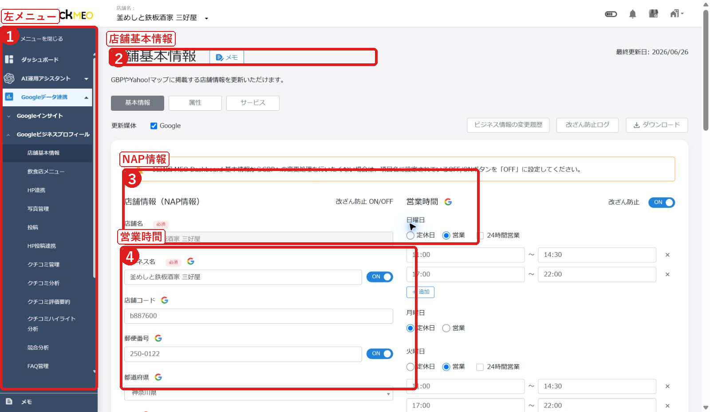

FoodLuck MEO 飲食店向け操作説明書
現場運用版 / 画面を見ながら使えるマニュアル
| この資料の使い方 FAQ全548記事の詳細反映版を元に、飲食店の現場で実際に使う順番へ整理しました。すべてのFAQを長く並べるのではなく、操作画面、手順、保存前の確認、困った時の見方を中心にまとめています。 |
|---|
1. まずはこの順番で使います
FoodLuck MEOは、毎日すべての画面を見る必要はありません。現場で無理なく続けるには、見る順番を決めることが大切です。
| タイミング | やること | 見る画面 | 目安 |
|---|---|---|---|
| 毎週 | 写真追加、投稿、未返信クチコミ確認 | 写真管理 / 投稿 / クチコミ管理 | 15分 |
| 毎月 | 検索数、電話、ルート、順位を確認 | インサイト / 順位 | 30分 |
| 変更時 | 営業時間、臨時休業、メニュー、予約リンクを更新 | 店舗基本情報 / 飲食店メニュー | 都度 |
| 困った時 | ステータス、エラー、反映タイミングを確認 | 各一覧 / トラブル対応 | 都度 |
| 店舗側とFoodLuck側の分担 店舗側は日常運用、FoodLuck側は初期連携・権限・外部媒体・タグ設置など影響が大きい設定を中心に担当します。迷った時は保存や削除を押す前に確認してください。 |
|---|
2. ログイン後に自分の店舗を開く
最初に店舗一覧から操作したい店舗を開きます。複数店舗を管理している場合は、別店舗に入ったまま操作しないように注意します。
店舗一覧画面

- 店舗名で検索します。
- 対象店舗名を押します。
- 一覧データは必要時だけ出力します。
- FoodLuck MEOにログインします。
- 店舗一覧で、操作する店舗名を検索します。
- 対象店舗名をクリックして、店舗ごとの管理画面を開きます。
- 左メニューから、店舗基本情報、写真管理、投稿、クチコミ管理、インサイトなどへ移動します。
□ 操作する店舗名が合っている
□ PC版かスマホ版かを確認した
□ 保存や投稿をする前に、別店舗を開いていないか確認した
3. 店舗基本情報を整える
店舗基本情報は、お客様がGoogleや各媒体で見る基本表示です。誤りがあると、電話がつながらない、営業時間を間違えて来店される、予約ページに進めないなどの機会損失につながります。
店舗基本情報画面

- 左メニューから開きます。
- 店名、住所、電話番号などを確認します。
- 営業時間と特別営業時間を確認します。
通常の確認手順
- 左メニューから店舗基本情報を開きます。
- 店名、住所、電話番号、Webサイト、SNS、予約リンクを確認します。
- 営業時間、定休日、24時間営業、特別営業時間、臨時休業を確認します。
- カテゴリ、サブカテゴリ、属性、サービス、テイクアウト・宅配などを確認します。
- 画面下部の登録ボタンを押す前に、お客様に表示されても問題ない内容か確認します。
| 場面 | 操作 | 確認すること |
|---|---|---|
| 営業時間を変える | 営業にチェックし、開店・閉店時間を入力します。定休日は定休日にチェックします。 | 曜日、昼夜営業、ラストオーダー表記の有無 |
| 年末年始・大型連休 | 特別営業時間を使い、日付ごとに営業時間または休業を設定します。 | 日をまたぐ営業は2日分に分ける |
| 臨時休業 | 7日以上の休業、または休業期間が未定の場合は臨時休業を検討します。 | Googleに出る表示として問題ないか |
| 予約リンク | 予約サイトや公式予約ページのURLを確認します。 | リンク切れ、別店舗ページ、古いコースページではないか |
| カテゴリ・属性 | メインカテゴリ、サブカテゴリ、属性、サービスを確認します。 | お客様が検索する言葉と合っているか |
| 保存前の注意 店舗基本情報は外部に表示される内容です。保存前に店名、住所、電話番号、営業時間、予約リンク、カテゴリをもう一度確認してください。 |
|---|
4. 写真・動画を管理する
写真は、来店前のお客様が安心して選ぶための材料です。料理写真だけでなく、外観、入口、席、店内、メニュー、季節商品を増やしていきます。
写真管理画面

- 新規登録を押します。
- カテゴリを選びます。
- 写真一覧で表示状態を確認します。
- 左メニューから写真管理を開きます。
- 新規登録を押します。
- 写真カテゴリを選びます。該当カテゴリがない場合は未選択で登録します。
- 画像を選択、またはドラッグ&ドロップで追加します。
- 読み込みが終わったら登録完了です。Google側の表示には時間差が出る場合があります。
| 場面 | 操作 | 確認すること |
|---|---|---|
| 料理写真 | 看板商品、季節商品、コース、ランチ、ドリンクを追加します。 | 明るさ、ピント、実物との違い |
| 外観・入口 | 初めてのお客様が迷わないように外観を追加します。 | 昼と夜で見え方が違う場合は両方 |
| 店内・席 | カウンター、テーブル、個室、宴会席などを追加します。 | 利用シーンが伝わるか |
| ロゴ・カバー | ロゴ写真、カバー写真を設定します。 | 店舗の印象として適切か |
| 削除 | オーナー提供写真のメニューから削除します。 | ユーザー提供写真はGoogleへの削除申請になる |
| 画像・動画の目安 静止画はJPGまたはPNG、10KBから5MB、720px角以上が目安です。動画は最大30秒、25MBまで、720p以上を目安にします。 |
|---|
5. 投稿する
投稿は、Google上で「今このお店に行く理由」を伝える機能です。新メニュー、季節商品、イベント、営業時間変更、キャンペーン、空席案内などを発信します。
投稿一覧画面

- 投稿状態を確認します。
- 新規投稿を押します。
- 投稿履歴を確認します。
新規投稿画面

- 投稿種類を選びます。
- 投稿先媒体を選びます。
- 本文、画像、日時を入力します。
投稿の基本手順
- 投稿一覧を開き、新規投稿を押します。
- 投稿種類を選びます。迷ったら最新情報、期間が決まっているものはイベント、割引や特典は特典を使います。
- 投稿先媒体を選びます。Google、Yahoo!、SNSなどは連携状態によって表示が変わります。
- 本文、画像、必要に応じてボタンURLやハッシュタグを入力します。
- 即時投稿または予約投稿を選びます。
- 右側の投稿イメージを確認し、登録します。
| 場面 | 操作 | 確認すること |
|---|---|---|
| 最新情報 | どんな案内にも使える基本投稿です。 | 新メニュー、営業案内、空席案内 |
| イベント | 開催期間やイベント名を設定します。 | 期間、曜日、開始・終了日 |
| 特典 | クーポンコードや特典リンクを設定します。 | 利用条件、期限、対象商品 |
| 商品投稿 | 商品名、価格、説明、画像を設定します。 | 価格や販売期間 |
| 予約投稿 | 投稿日時を指定します。 | 最大5件、当日予約は3時間以上先が目安 |
| 投稿エラーを減らす確認 文字数、電話番号やメールアドレスの記載、画像サイズ、リンク先、媒体ごとのルールを確認します。投稿拒否やAPI投稿エラーが出た場合は、内容を直して新しい投稿として再登録します。 |
|---|
6. クチコミに返信する
クチコミ返信は、投稿者だけでなく未来のお客様にも見られます。返信は集客の一部です。感謝、受け止め、改善姿勢が伝わるように返します。
クチコミ管理画面

- 未返信を絞り込みます。
- クチコミ一覧を確認します。
- 返信や設定を行います。
- クチコミ管理を開きます。
- 未返信を選び、返信が必要なクチコミを確認します。
- クチコミ内容と星の数を確認します。
- 返信文を入力します。テンプレートやAI返信を使う場合も、最後は店舗の言葉に直します。
- 個人情報、言い過ぎ、事実と違う表現がないか確認して登録します。
| 場面 | 操作 | 確認すること |
|---|---|---|
| 高評価 | 来店へのお礼と、具体的に喜んでいただけた点への感謝を返します。 | 定型文だけになっていないか |
| コメントなし | 星評価へのお礼を簡潔に返します。 | 機械的に見えないか |
| 低評価 | お詫び、受け止め、改善姿勢、必要に応じて直接連絡へ誘導します。 | 公開の場で反論しない |
| 削除したい | Googleのポリシー違反やスパムの可能性を確認します。 | 削除はGoogle側判断 |
| 自動返信 | 条件とテンプレートを設定します。 | 低評価や長文は人の確認を優先 |
| 低評価返信の考え方 事実と違う内容があっても、感情的に反論しません。クチコミ欄は他のお客様も見ています。お店として誠実に受け止め、改善に取り組む姿勢を見せることが大切です。 |
|---|
7. インサイトを見る
インサイトは、Google検索やGoogleマップでお店がどれだけ見られ、どんな行動につながったかを見る画面です。数字を細かく追いすぎるより、月ごとの傾向を見ます。
インサイト画面

- 期間と媒体を選びます。
- 主要指標を確認します。
- 検索経路と行動を確認します。
画面上部で見る数字
| 場面 | 操作 | 確認すること |
|---|---|---|
| 全体閲覧ユーザー数 | Google検索とGoogleマップで店舗情報を見たユーザー数です。 | 検索される機会が増えているか |
| 全体アクション数 | 電話、Webサイト、ルート検索など、お客様が起こした行動の合計です。 | 来店に近い行動が増えているか |
| 全体アクション率 | 表示されたうち、どれくらい行動につながったかの割合です。 | 写真・投稿・口コミ・導線の改善余地 |
| Googleサービス | Google検索とGoogleマップのどちらで見られたかを確認します。 | マップ経由が多いか、検索経由が多いか |
| デバイス | PCとスマートフォンのどちらで見られたかを確認します。 | スマホから見やすい情報になっているか |
画面下部で見る行動
| 場面 | 操作 | 確認すること |
|---|---|---|
| Webサイト | Webサイトボタンがクリック/タップされた回数です。 | 予約ページや公式サイトへの導線 |
| ルート検索 | 経路案内ボタンがクリック/タップされた回数です。 | 来店意欲に近い指標 |
| 電話 | 電話ボタンが押され、電話番号が表示された回数です。 | 実際の着信数とは異なる |
| Google予約 | Googleの予約ボタンから予約完了した数です。 | クリックだけではカウントされない |
| 飲食店メニュー | Googleマップのメニュータブ閲覧や注文回数です。 | 飲食店のみ表示される項目 |
| 数字が0や急変した時 Google側の反映タイミングやAPI仕様の影響で、直近データが遅れたり0表示になることがあります。通常5〜7日程度のタイムラグが出る場合があります。期間指定、連携状態、Google側の仕様変更を確認します。 |
|---|
□ 先月と比べて閲覧ユーザー数は増えたか
□ 電話、ルート、Webクリックは増えたか
□ Google検索とGoogleマップのどちらが多いか
□ 投稿や写真を増やした月に数字がどう動いたか
□ 順位やクチコミ数と合わせて見たか
8. 順位とキーワードを見る
順位は、登録キーワードと検索地点で変わります。1日の上下に一喜一憂するより、月単位で傾向を見て、写真・投稿・クチコミ・メニュー改善につなげます。
順位チャート画面

- キーワードや地点を設定します。
- 順位推移を見ます。
- 急な変動は原因を切り分けます。
| 場面 | 操作 | 確認すること |
|---|---|---|
| 順位チャート | キーワードごとの順位推移を確認します。 | 上がった理由、下がった理由を考える |
| 多地点順位 | 商圏内の複数地点で順位を確認します。 | 強いエリア、弱いエリア |
| カレンダー順位 | 日ごとの順位変動を確認します。 | イベントや投稿との関係 |
| キーワード分析 | 流入キーワードや登録キーワードを確認します。 | お客様が探す言葉と合っているか |
| 順位変動アラート | 大きな変動時に気づけるよう設定します。 | 一時的な変動か継続変化か |
| 順位だけで判断しない 順位が上がっても、写真、クチコミ、投稿、メニュー、営業時間が整っていなければ来店につながりません。順位は改善の入口として見ます。 |
|---|
9. クチコミを増やす
クチコミ促進は、来店後のお客様に自然に感想を書いていただくための機能です。高評価を条件にした依頼や特典との交換は避けます。
| 場面 | 操作 | 確認すること |
|---|---|---|
| アンケート作成 | アンケート一覧から新規作成し、質問、回答項目、遷移先を設定します。 | Googleレビューへ遷移するか |
| QRコード配布 | アンケート配布でデザインを選び、PDFを出力します。 | PDFは店舗側で保管 |
| URL配布 | アンケートURLを店頭POP、LINE、メールなどで案内します。 | 店舗ごとのURLを間違えない |
| メール・SMS | クチコミ依頼から送信タイプ、顧客情報、本文、日時を設定します。 | 文字数制限、送信日時 |
| 結果確認 | アンケート結果を見て、お客様の声を確認します。 | 改善に使える声を拾う |
| 現場での声かけ例 本日はありがとうございました。もしよろしければ、今後のお店づくりの参考にGoogleのクチコミでご感想をいただけると励みになります。 |
|---|
10. 追加機能を使う
追加機能は契約内容や連携状況によって表示・利用できる範囲が変わります。表示されない場合はFoodLuckへ確認してください。
| 場面 | 操作 | 確認すること |
|---|---|---|
| 飲食店メニュー | メニュー名、価格、説明、写真、食事制限対応を登録します。 | 登録内容はGoogleへ反映 |
| クーポン管理 | クーポン条件、期間、画像、配布方法を設定します。 | 利用条件と期限 |
| FAQ管理 | 予約、支払い、個室、喫煙、駐車場などよくある質問を整えます。 | お客様の不安を先回り |
| クチコミ分析 | 良い点、悪い点、よく出る言葉を確認します。 | 現場改善に使える言葉 |
| HP連携 | 店舗情報や投稿をホームページへ連携します。 | タグ設置はFoodLuck側確認 |
| SNS連携 | X、Facebook、Instagram、LINEと連携します。 | 外部アカウント権限が必要 |
| 各媒体連携 | Yahoo!、Apple、食べログ、エキテンを確認します。 | 媒体ごとに反映仕様が違う |
11. 初期設定・管理者向け項目
初期設定や連携機能は、店舗側が使う前の土台です。誤操作の影響が大きいため、FoodLuckまたは管理者が確認しながら進めます。
| 場面 | 操作 | 確認すること |
|---|---|---|
| GBP連携 | オーナー権限を持つGoogleアカウントで許可し、対象ビジネスを選びます。 | 権限、対象店舗、連携状態 |
| 再連携 | Google側の権限変更や連携切れが起きた時に再接続します。 | ステータス、アカウント停止 |
| ユーザー追加 | メールアドレスごとにアカウントを作成し、権限を設定します。 | 全権、承認、編集、閲覧 |
| ワークフロー | 投稿やクチコミ返信に承認を入れる設定です。 | 誰が承認するか |
| グループ管理 | 複数店舗をまとめて管理します。 | 店舗追加・削除、フォルダ |
| キーワード設定 | 順位計測するキーワードと検索エリアを設定します。 | 仮登録、本登録 |
| 店舗側に伝えること 管理者向け項目は、店舗スタッフが通常操作で触る必要はありません。画面が見えても、保存・削除・連携解除はFoodLuckへ確認してから行います。 |
|---|
12. 困った時の確認表
| 場面 | 操作 | 確認すること |
|---|---|---|
| 投稿が反映されない | 投稿一覧のステータスを確認します。 | Google処理中、投稿拒否、API投稿エラー、画像・文字数 |
| 予約投稿が出ない | 予約日時、予約件数、承認状態を確認します。 | 最大5件、約1時間前以降の修正不可 |
| 写真が表示されない | 写真管理とGoogle側の反映待ちを確認します。 | 画像サイズ、カテゴリ、反映タイムラグ |
| 写真を削除したい | オーナー提供かユーザー提供かを確認します。 | ユーザー提供は削除申請 |
| クチコミが見えない | Google側の審査・非表示・削除の可能性を確認します。 | スパム判定、一時非表示 |
| 返信が反映されない | DashboardとGBP側の反映タイミングを確認します。 | 直接GBPで編集・削除していないか |
| インサイトが0 | 期間指定、連携状態、Google側の反映タイミングを確認します。 | 5〜7日程度の遅れ |
| 順位が急変した | 検索地点、キーワード、競合、Google側変動を確認します。 | 一時変動か継続変動か |
| FoodLuckへ相談する時 店舗名、該当画面、操作日時、エラー文、投稿や写真の内容、スクリーンショットを一緒に送ると確認が早くなります。 |
|---|
13. 月次運用チェックリスト
毎月一度、このページだけでも確認してください。数字と現場感を合わせることで、次に何を改善するかが見えます。
□ 店舗名、住所、電話番号、営業時間、予約リンクに変更はない
□ 特別営業時間、臨時休業、年末年始や大型連休の設定を確認した
□ 新しい料理、季節商品、外観、店内写真を追加した
□ 最新情報、イベント、特典などの投稿が止まっていない
□ 未返信クチコミがない
□ 低評価クチコミに冷静に返信できている
□ 全体閲覧ユーザー数、全体アクション数、アクション率を確認した
□ 電話、ルート、Webクリック、予約、メニュー閲覧を確認した
□ 主要キーワードの順位を確認した
□ クチコミ促進のQRや声かけが現場で使われている